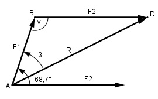

Aufgabe 215 Zwei Kräfte F1 = 34,5 N und F2 = 57,2 N greifen unter einem Winkel α = 68,7° an einem Punkt eines Körpers an. Wie groß ist die Resultierende R und der Winkel β, den sie mit der Kraft F1 bildet?

Im Dreieck ADB: γ = 180° - 68,7° = 111,3° Fall SWS: Cosinussatz: R2 = F12 + F22 - 2 * F1 * F2 * cos γ = R2 = (34,5 N)2 + (57,2 N)2 - - 2 * 34,5 N * 57,2 N * cos 111,3° R2 = (34,5 N)2 + (57,2 N)2 - - 2 * 34,5 N * 57,2 N * (-0,3633) R2 = 5 896 N2 |√ R = 76,8 N Fall SSW: Sinussatz: F2 R -------- = ------- |*sin β sin β sin γ R * sin β F2 = ------------- |*sin γ sin γ F2 * sin γ = R * sin β |:R F2 * sin γ 57,2 N * sin 111,3° sin β = ------------ = --------------------- = R 76,8 N 57,2 N * 0,9317 = ----------------- = 0,6939 --> β = 43,9° 76,8 N